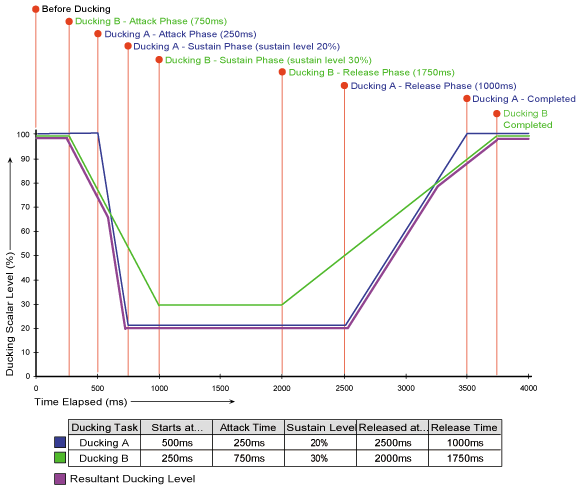

|
| Contents | |
| About This Extension |
The term "ducking", as it is used in the radio broadcasting profession, refers to the technique of reducing the volume level of the primary audio content so that an announcer can interject commentary and be heard clearly. Typically, the primary audio content continues while the announcer is speaking in order to create a smoother and less jarring experience. This technique also has the convenience of not requiring that it be possible to pause the primary audio content - particularly useful in live broadcasting situations.
In the broadcasting profession, ducking is typically implemented in an automatic manner using specialized audio processing hardware, so as to take the burden of managing audio levels off the announcer. In the same way that such audio hardware takes the burden off the announcer, so the Ducking extension takes the burden off developers of sonified content.
The Ducking extension provides methods for linking instances to one another and setting up automated ducking relationships. If you were to hand code these behaviors into each sonification project, a good deal of time would be spent with this rather mundane and mechanical aspect of the sonification, instead of being able to spend more time on the creative aspects. The Ducking extension lifts a major burden from you and lets you get down to the stuff that really counts - exercizing the skills of sound design, musical composition, and interactive audio conceptualization.
One way you could add emphasis to a particular audio element in sonified content would be to wire it up to other Music Object instances that may be playing audio at the time that the element is triggered, so that the other audio that is playing is ducked by a small amount - just enough so that the element you're trying to emphasize stands out, and gentle enough so that the effect is almost imperceptible to the user and is not abrupt or jarring in any way.
If you are developing a sonified Web site where spoken phrases may be triggered by certain user interface elements, then background music for the site may hamper the intelligibility of the speech. If sacrificing the site's background music is just not an option, then the Ducking extension can be used to allow the spoken user interface sonification and the background music to coexist.
Using this extension, the Music Object instances that are to play the spoken phrases can be wired up as ducking masters for any Music Object instances that are to play background music. Because the Ducking extension lets you customize the amount of volume attenuation that is applied during ducking, the background music could be ducked just enough to make the spoken phrases intelligible, while still allowing the background music to be heard.
Audio adds a powerful element to advertising on Web sites that can help to strengthen brand identity for banner ads and other types of Web advertising. Television viewers and radio listeners, for example, are often able to recognize a specific company or product that is being advertised purely by the audio logo that plays along with a commercial. However, advertisers may be very sensitive to how a company's or product's signature audio logo is mixed in along with other distracting audio elements or themes. In fact, anything that dilutes or detracts from the identity of an audio logo may be considered unacceptable.
In such cases, the Music Object instances that are to play audio logos for advertising can be wired up as ducking masters for any Music Object instances that are to play background music or any other elements of the sonification. The amount of volume attenuation that is applied during ducking can be set in such a way that that any distracting audio elements are completely silenced while an advertising logo plays.
In many cases - even when the integrity of audio branding or the intelligibility of spoken word is not of great concern - playing a musical jingle along with a musical background theme may simply create an unpleasant and jarring cacophony. Unless such a jingle is perfectly synchronized with the background music and is in the same musical key, the two playing together is likely to sound aweful - to say the least.
In such cases, it may be appropriate to fully duck all background music while a musical jingle plays. Any Music Object instances that are to play musical jingles can be wired up as ducking masters for any Music Object instances that are to play background music, so that background music is completely silenced while a jingle plays.
Ducking is, in essence, a master-slave relationship. If a Music Object instance is configured in a ducking relationship as a slave, then that instance will be ducked while its master is audible. When the ducking master becomes audible, it issues an "order" to the slave. The slave, in turn, does its master's bidding by "obeying" this order to reduce its volume. When the master becomes inaudible once again, it "grants" permission to its slave to restore its original volume level so that it may once again be fully heard. So, a ducking slave is affected during a ducking process while a ducking master is not.
The Ducking extension is very flexible and allows a ducking slave to have multiple ducking masters, and also allows a ducking master to have multiple ducking slaves (see the section Complex Ducking Relationships).
Because ducking is, by definition, a process that affects volume, a sensible way had to be found to achieve the desired volume attenuation. One possible approach would be to use a Music Object instance's main volume setting, that can be set using the VOLUME embedding property or the setVolume instance method). However, because this main volume setting is often used to balance out the mix of various sonification elements in a page, using this setting could be quite obstructive to developing sonified content, since ducking processes would overwrite this volume setting and possibly even "fight" with other code for control over it.
Instead, the Ducking extension uses the system of custom volume scalars (see the section Important Concepts: Custom Volume Scalars) in order to achieve the desired volume attenuation in a way that respects a Music Object instance's main volume setting. When the Ducking extension is used, a dedicated volume scalar is assigned to each Music Object for the purpose of ducking. A single volume scalar is assigned to a Music Object instance, regardless of how many ducking masters the instance may have. If an instance has multiple ducking masters that are audible, then the multiple concurrent ducking tasks for that instance will cooperate with each other in setting the level of the instance's ducking volume scalar (see the section Multiple Concurrent Ducking).

The Ducking extension assigns a dedicated volume scalar named "[R]ducking" to each Music Object instance. If you are creating your own custom volume scalars, you should never choose names that begin with the text "[R]", since this prefix is used by the Music Object API for its own reserved volume scalars (see the section Custom Volume Scalars: Reserved Volume Scalars).
For a simple ducking relationship where one Music Object instance has only one ducking master, a ducking process is triggered for the instance when the instance's ducking master becomes audible, and this ducking process is then released when the ducking master once again becomes inaudible.
While ducking is in progress, the level of the slave instance's dedicated ducking volume scalar is faded appropriately in order to achieve the desired pattern of volume attenuation for the instance. The following diagram illustrates a simple ducking process by contrasting elapsed time (on the X axis) against the value of the ducking volume scalar (on the Y axis). The timeline is divided up into discrete sections, indicating the different phases that make up a simple ducking process. These phases are described in more detail below the illustration.

Before ducking is triggered for the slave instance (ie. while the ducking master is inaudible), its ducking volume scalar remains set to the value 100. Set at this value, the ducking volume scalar has no effect on the instance's overall output volume (as returned by the getOutputVolume instance method).
Ducking for the slave instance is triggered immediately when the instance's ducking master becomes audible. So that the ducking effect does not sound too abrupt, the Ducking extension provides a way to customize the amount of time that it should take for the slave instance's ducking volume scalar to fade from the value 100 down to the ducking sustain level. This fade time is referred to as the "attack time", and can be specified using the AttackTimeMsINT parameter when creating ducking relationships.
It is usually appropriate to set quite a short attack time so that there is not too much audio overlap between master and slave, with the slave still being heard while it is fading out and while its master has already started playing. In the example shown in the diagram, the attack time is set to 250ms (a quarter of a second).
After ducking for the slave instance has been triggered, and after the attack time has elapsed, the ducking process enters into the sustain phase. By this point, the value of the slave instance's ducking volume scalar has completed fading down to the sustain level. During the entire sustain phase, the ducking volume scalar is sustained at the same level. There is no set duration for the sustain phase. Instead, the sustain phase lasts for as long as the ducking master remains audible. In the example shown in the diagram, the sustain phase lasts for 1750 milliseconds (one and three quarters of a second).
In order to allow for different levels of volume attenuation in different kinds of ducking applications, the Ducking extension lets you specify the degree of attenuation that is to be applied while an instance is being ducked. This attenuation (referred to as "sustain level") is expressed as a percentage of original volume level, and can be specified using the SustainLevel0to100 parameter when creating ducking relationships.
So, for instance, a sustain level of 0 would indicate a severe attenuation, where the slave instance will be attenuated to 0% of its original volume level when it is being ducked. On the other hand, a level of 50 would indicate a gentler attenuation, where the slave instance will be attenuated to 50% of its original volume level when it is being ducked. In the example shown in the diagram, the sustain level is set to 20% (one fifth of original volume level).
Ducking for the slave instance is released immediately when the instance's ducking master once again becomes inaudible. So that the ducking effect does not sound too abrupt, the Ducking extension provides a way to customize the amount of time that it should take for the slave instance's ducking volume scalar to fade from the ducking sustain level back up to the full 100. This fade time is referred to as the "release time", and can be specified using the ReleaseTimeMsINT parameter when creating ducking relationships.
It is usually appropriate to set a relatively long release time, so that the release phase is gentle on the ear as the slave fades back in. In the example shown in the diagram, the release time is set to 1000ms (one second).
Ducking is finally completed for the slave instance after the release phase is over and the value of the slave instance's ducking volume scalar has completed fading back up to the value 100 that was set before ducking began. Set at this value, the ducking volume scalar once again has no effect on the instance's overall output volume, and the slave instance awaits the next ducking process.
The Ducking extension is very flexible and allows a ducking slave to have multiple ducking masters, and also allows a ducking master to have multiple ducking slaves.
For a complex ducking relationship where one Music Object instance has multiple ducking masters, a ducking process is triggered for the instance when one or more of the instance's ducking masters become audible, after all the ducking masters were previously inaudible. A ducking process for the instance is effectively only released when all of the instance's ducking masters become inaudible, after some of the ducking masters were previously audible.
With the Ducking extension it is possible for one ducking slave to have multiple ducking masters. It is, therefore, possible for a slave to be ducked by more than one master at the same time. In such cases, the Ducking extension must resolve multiple separate requests to control the value of the slave's ducking volume scalar. In order to do this, the Ducking extension uses the following two rules...
A ducking slave should not have its volume attenuated to a level that is any lower than is necessary in order to satisfy the desires of all active ducking tasks that are controlling it. So, for example, if there are two ducking tasks controlling a slave, and the one task would like attenuation down to 30% of original volume level while the other task would like attenuation down to 20% of original volume level, then attenuation should be 20% while both tasks are active. Attenuation should not be down to 20% of 30% (ie. 6%) simply because there are two ducking tasks controlling the slave, since neither of the ducking tasks require that the slave be attenuated so extremely.
A ducking slave should not have its volume attenuated to a level that is any higher than the lowest level desired by any of the slave's active ducking tasks. If there is any ducking task active and that ducking task would like the slave to be attenuated to a certain level, no other concurrent ducking task should be able to set the ducking volume scalar to a level that is higher. The lowest is the safest.
What these two rules amount to, essentially, is the melding together of all envelopes for concurrent ducking tasks into one envelope, by always taking the minimum value out of all active ducking tasks at any point in time.
The following diagram illustrates how the Ducking extension handles concurrent ducking tasks, and how the value of the ducking volume scalar is derived from these ducking tasks. In order to keep things fairly simple, this diagram only shows the combination of two ducking tasks, but these very same principles can be applied to any number of concurrent ducking tasks. The two ducking tasks shown are triggered at different times, released at different times, and have different settings for attack time, sustain level, and release time.

In the diagram, the green lines and annotations indicate ducking task A, while the blue lines and annotations indicate ducking task B. The purple lines that lie beneath both the green and blue lines indicate the level that would be set as a result of the combination of ducking task A and ducking task B. Notice how this line tracks the combined minimum values out of the two concurrent ducking tasks.
Don't be thrown off by the small vertical gap between the purple line and the green and blue lines. This gap is only provided to help distinguish between the different color lines and to make the diagram easier to view, but it should be interpreted that these lines that are shown so close together are directly on the same values for ducking scalar level.
Every effort has been made in the design of the Music Object API, to design the different extensions in such a manner that they can interoperate with each other in useful and practical ways. One case in point is the Clip extension, which provides not only a very handy way of getting access to an individual Music Object instance that services the needs of a specific Music.Clip object instance, but also a handy way of accessing the entire list of Music.Clip object instances created in a page - regardless of how those instances were created.
Consequently, if you were creating a preview page using the Clip extension and you also wanted to have background music playing on that page, then you could quite easily use the Ducking extension to wire the Music Object instances for all the clips to the Music Object instance that will be playing the background music. The code to do this might look as follows...
for (var clipNo = 0; clipNo < Music.Clip.instances.length; clipNo++) {
backgroundMO.addDuckingMasters (Music.Clip.instances [clipNo].musicObject);
}
|
In the above sample code snippet, it is assumed that the Clip extension and the Ducking extension have been sourced in, that all the Music.Clip object instances have been created, that the background music's Music Object instance has been created, etc.
| What's New in the Latest Version |
There is a dedicated version history for this extension, where you will be able to find out about the new features and possible issues with the most recent version. The version history for this extension is independent of the version history for the core Music Object API.
| Getting This Extension |
To get the "music-object-x-ducking.js" JavaScript file that implements this extension, simply right-click on this link (click-and-hold for Mac users). Then, from the menu that pops up, select the 'Save Link As...' or 'Save Target As...' option and save the file as "music-object-x-ducking.js" into an appropriate folder of the local copy of your Web site.
In case you have problems saving the file using the above link, the "music-object-x-ducking.js" file can also be found inside the documentation's "javascript" folder, along with the "music-object.js" file.
| Dependencies |
In order to use this extension, the following JavaScript file(s) must first be sourced in...
For more information on using extensions, consult the section About Music Object Extensions.
| Reference |
| |||||||||||||||||||||||||||||||
| Instance Methods |
| addDuckingMasters |
|
The addDuckingMasters instance method lets you add ducking masters for a Music Object instances.
|
addDuckingMasters ( DuckingMastersARRAYorOBJ , AttackTimeMsINT , SustainLevel0to100 , ReleaseTimeMsINT ) |
When no ReleaseTimeMsINT parameter is specified, then the default value of 1500 will be used for this parameter.
When there is also no SustainLevel0to100 parameter specified, then the default value of 0 will be used for this parameter.
When there is also no AttackTimeMsINT parameter specified, then the default value of 200 will be used for this parameter.
When there is also no DuckingMastersARRAYorOBJ parameter specified, then all Music Object instances currently created in the document - excluding the instance on which this method is being called - will be added as ducking masters for the instance.
| addDuckingSlaves |
|
The addDuckingSlaves instance method lets you add ducking slaves for a Music Object instances.
|
addDuckingSlaves ( DuckingSlavesARRAYorOBJ , AttackTimeMsINT , SustainLevel0to100 , ReleaseTimeMsINT ) |
When no ReleaseTimeMsINT parameter is specified, then the default value of 1500 will be used for this parameter.
When there is also no SustainLevel0to100 parameter specified, then the default value of 0 will be used for this parameter.
When there is also no AttackTimeMsINT parameter specified, then the default value of 200 will be used for this parameter.
When there is also no DuckingSlavesARRAYorOBJ parameter specified, then all Music Object instances currently created in the document - excluding the instance on which this method is being called - will be added as ducking slaves for the instance.
| getUsage |
|
The getUsage instance method returns a string value, indicating the usage mode for the Music Object instance
| getUsage ( ) |
| UsageSTR |
| removeDuckingMasters |
|
The removeDuckingMasters instance method lets you remove ducking masters from a Music Object instance.
| removeDuckingMasters ( DuckingMastersARRAYorOBJ ) |
When no DuckingMastersARRAYorOBJ parameter is specified, then all Music Object instances currently created in the document - excluding the instance on which this method is being called - will be removed as ducking masters from the instance.
| removeDuckingSlaves |
|
The removeDuckingSlaves instance method lets you remove ducking slaves from a Music Object instance.
| removeDuckingSlaves ( DuckingSlavesARRAYorOBJ ) |
When no DuckingSlavesARRAYorOBJ parameter is specified, then all Music Object instances currently created in the document - excluding the instance on which this method is being called - will be removed as ducking slaves from the instance.
| setUsage |
|
The setUsage instance method lets you set the usage mode for the Music Object instance.
| setUsage ( UsageSTR ) |
| Static Methods |
| Music.addDuckingRelationships |
|
The Music.addDuckingRelationships static method lets you conveniently add many ducking slaves to many ducking masters in a single operation.
|
Music.addDuckingRelationships ( DuckingMastersARRAYorOBJ , DuckingSlavesARRAYorOBJ , AttackTimeMsINT , SustainLevel0to100 , ReleaseTimeMsINT ) |
When no ReleaseTimeMsINT parameter is specified, then the default value of 1500 will be used for this parameter.
When there is also no SustainLevel0to100 parameter specified, then the default value of 0 will be used for this parameter.
When there is also no AttackTimeMsINT parameter specified, then the default value of 200 will be used for this parameter.
When there is also no DuckingSlavesARRAYorOBJ parameter specified, then all Music Object instances currently created in the document - excluding those instances specified by the DuckingMastersARRAYorOBJ parameter - will be added as ducking slaves for those instances specified by the DuckingMastersARRAYorOBJ parameter.
| Music.removeDuckingRelationships |
|
The Music.removeDuckingRelationships static method lets you conveniently remove many ducking slaves from many ducking masters in a single operation.
|
Music.removeDuckingRelationships ( DuckingMastersARRAYorOBJ , DuckingSlavesARRAYorOBJ ) |
When no DuckingSlavesARRAYorOBJ parameter is specified, then all Music Object instances currently created in the document - excluding those instances specified by the DuckingMastersARRAYorOBJ parameter - will be removed as ducking slaves from those instances specified by the DuckingMastersARRAYorOBJ parameter.
| Static Properties |
| Music.duckingAttackTime |
|
The Music.duckingAttackTime static property is an integer variable, specifying the default value that should be used for the AttackTimeMsINT parameter, if this parameter is not specified when setting up ducking relationships.
For more information, consult the section Setting Defaults for the Ducking Properties.
| Music.duckingReleaseTime |
|
The Music.duckingReleaseTime static property is an integer variable, specifying the default value that should be used for the ReleaseTimeMsINT parameter, if this parameter is not specified when setting up ducking relationships.
For more information, consult the section Setting Defaults for the Ducking Properties.
| Music.duckingSustainLevel |
|
The Music.duckingSustainLevel static property is an integer variable, specifying the default value that should be used for the SustainLevel0to100 parameter, if this parameter is not specified when setting up ducking relationships.
For more information, consult the section Setting Defaults for the Ducking Properties.